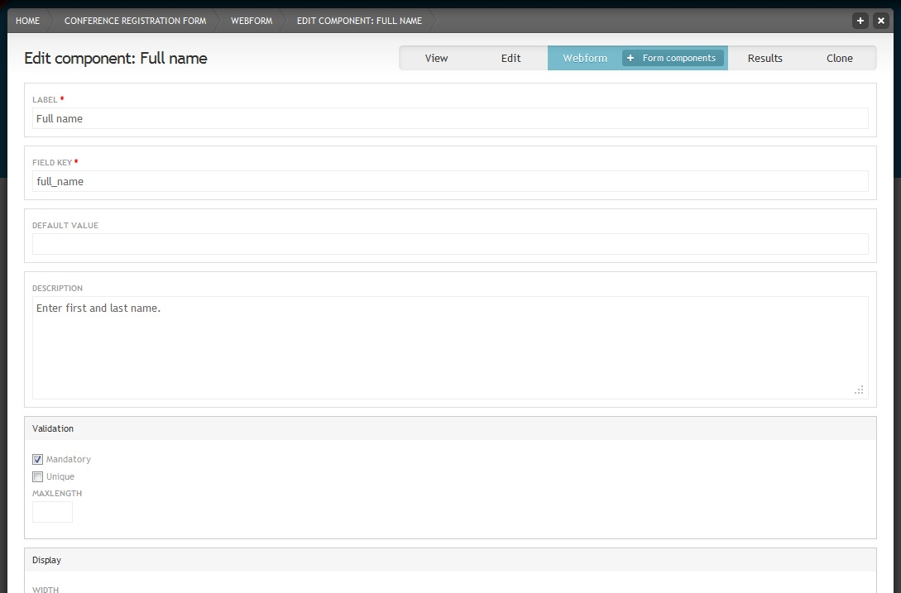
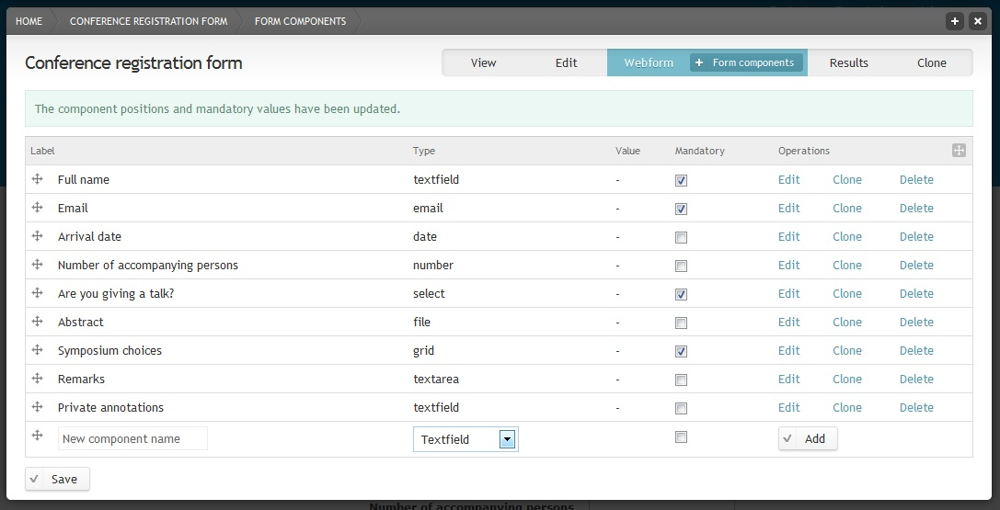

Webform¶

Aim: Create a webform for a conference registration.
You need: -
Time: 20 min ## Instructions Webforms contain a set of fields that people can fill in without having to register or log in to the Scratchpad site. Webforms can be used for example for the registration for conferences and courses (see http://scratchpads.eu/scratchpad-training-courses), or for questionnaires (see http://scratchpads.eu//feedback-form-training-courses). The owner of the webform can be notified about each registration by email, check the registrations in table format or download the data. To create a webform, the webform module has to be activated first.
Enable the webform module¶
Click in the Admin menu and then on .
In the ‘Webform’ section (in bottom right corner) turn Webforms on and save.

Create a webform
Create a webform¶
- Click to in the Admin menu and then on the link for webform. Enter a TITLE and some BODY text. The body text will appear at the top of the form and can be used for an introduction. Save. Now you can enter components to your form.

Add a webform component
Text fields¶
Components of the type “Textfield” are for entering short text that is up to 255 characters long. Add a component for entering the full name.
Add “Full name” as the new component name and select the “Textfield” type. Check “Mandatory”. Mandatory means that the user has to fill in this field before he can submit the form. Click the button.
Webform component settings
Under ‘DESCRIPTION’ add a short instructions that help users in filling in this field.
In the ‘Display’ section you have several options for changing the display. For example if you add a field asking for the size of a poster, you could add “cm” in the ‘LABEL PLACED TO THE RIGHT OF THE TEXTFIELD’ field, so that users know to give the size in centimeters. By default the label is placed above the field. To save space select “Inline” as ‘LABEL DISPLAY’. For our “Full name” example component just select “Inline” display and none of the other display options. Save component.

Webform with introduction and one component
Click on the tab to check how your webform looks so far. Then click on the tab to add more components.
Email fields¶
- Add “Email” as the new component name and select the “E-mail” type. Check “Mandatory”. Click the button. Save.
Date fields¶
- Add “Arrival date” as the new component name and select the “Date” type. Enter “2000-05-29” as ‘START DATE’. Enable the pop-up calender and choose “inline” for the label display. Save.
Number fields¶
- Add “Number of accompanying persons” as the new component name and select the “Number” type. Add. Check “Integer” in the ‘Validation’ section. Choose “inline” for the label display. Save.
Select option fields¶
- Add “Are you giving a talk?” as the new component name and select the “Select options” type. Check “Mandatory”. Add. Enter “1|No” and “2|Yes” in the ‘OPTIONS’ field in two lines. The ‘OPTIONS’ field uses safe keys. Safe keys ensure that each options is saved individually. For example if you publish a webform and at a later stage decide to change the wording of one of the options, you would only change the readable option, not the save key. That way the system recognizes that this is still the same option and this will help you later when you evaluate the results. The safe key is always on the left side and separated from the readable option by a pipe character. Save.
File fields¶
- Add “Abstract” as the new component name and select the “File” type. Click the button. Add some instructions on what the abstract should contain in the ‘DESCRIPTION’ field. In the ‘UPLOAD DESTINATION’ section check “Private files” so that only user that have the right to view submissions can view the abstracts. Under ‘ALLOWED FILE EXTENTIONS’ unselect the web images extensions and choose several documents extensions instead. Save.
Grid fields¶
Grid fields allow the user to select different choices for a set of questions. Grids are often used in questionnaires to for example state how good something is on a scale from 1 to 5. For our conference registration webform we will assume that participants numbers for symposia are restricted add a grid in which users can state how important the attendance at specific symposia is for them.
Add “Symposium choices” as the new component name and select the “Grid” type. Check “Mandatory”. Click the button.

Webform component settings for Grid fields
Add some options as well as the questions (both with safe keys) and a description. Save.
Webform administration page with various form components
Text area fields¶
Text area fields are for longer text.
- Add “Remarks” as the new component name and select the “Textarea” type. Click the button.
Private fields¶
If you want to annotate the forms that users have submitted without having the annotation field showing up in the webform, check “Private” at the bottom of the component settings page.
- Add “Private annotations” as the new component name and select the “Textfield” type. Click the button. Check “Private”. Save.
- Click on the tab to have a look at your webform. For long forms you can add page breaks if needed. Log out of your Scratchpad and go to the webform page. You will notice that the “Private annotations” field is now hidden.